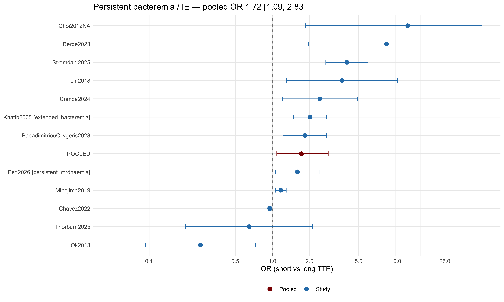
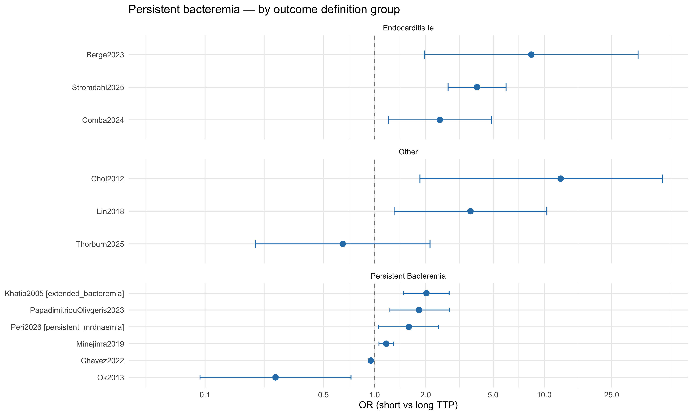

| Outcome | Effect sizes | Unique studies |
|---|---|---|
| Persistent bacteremia | 12 | 12 |
| Microbiological clearance | 4 | 3 |
| Relapse | 0 | 0 |
TTP and Clinical Failure Outcomes
Persistent bacteremia / microbiological clearance / relapse (v4 update)
1 Pre-analysis feasibility check
In the v1 analysis (n=57 studies, Feb 2026), the clinical failure analysis was deemed not feasible: only 4 studies had usable data, with severe directionality contradictions and one extreme outlier (OR≈1115 in Melling 2019). The v4 update adds 43 new strict-pool studies, several of which report persistent bacteremia, microbiological clearance, or relapse outcomes. This page revisits feasibility.
1.1 Available data (strict pool, n=100 studies)
1.2 Persistent bacteremia (most-reported clinical failure outcome)

1.3 Subset analysis: persistent bacteremia by outcome definition
The persistent bacteremia pool mixes genuinely different endpoints — true persistent/extended bacteremia, endocarditis/IE diagnoses, and other outcomes (e.g. line removal failure, mortality). We examine whether the definition group moderates the pooled effect.
Meta-regression: def_group moderator on persistent bacteremia
Estimate Est.Error Q2.5 Q97.5
Intercept 0.368 0.220 -0.044 0.853
def_groupendocarditis_IE 0.596 0.354 -0.151 1.234
def_groupother 0.249 0.369 -0.479 0.964
NoteLow-power caveat
The meta-regression has very few observations per group (≤6), so the moderator estimates are imprecise and should be treated as exploratory. The faceted forest plot is intended to highlight definitional heterogeneity, not to provide reliable subgroup-specific pooled effects.
1.4 Microbiological clearance
Microbiological clearance — pooled OR 1.70 [0.24, 9.51] from 4 effect sizes (3 studies).1.5 Relapse
Relapse: only 0 effect sizes — insufficient for meta-analysis.2 Interpretation caveats carried forward from v1
WarningUse with caution
Outcome heterogeneity persists. The Codebook’s
outcome_typeenum (mortality | persistent_bacteremia | microbiological_clearance | relapse) has been applied liberally for v4 — endocarditis, septic shock, IE-positive ECHO, and metastatic-infection outcomes are mapped to the nearest enum value with the actual outcome described inoutcome_definition. Pool only after grouping rows whoseoutcome_definitionis genuinely comparable.Direction of association may flip across studies. In v1, Ok2013 reported the opposite direction (short TTP → less persistent bacteremia) to the other studies — a real-world finding, not an extraction error. Look for similar directional outliers in v4.
Outcome definitions vary widely. Persistent bacteremia at 48h, 72h, or 7 days; clearance defined as “first negative culture” vs “two consecutive negatives”; relapse within 30d vs 90d. These are not interchangeable. A subset analysis by definition group is included above (Figure 2), but power is very low (≤6 effects per group).
Inclusive-pool studies (n=40) are excluded from this page since their outcome data is largely descriptive (no TTP↔︎outcome model). If you want to add them, re-run with
include_inclusive_pool = TRUEin the setup chunk.
3 Outcome-definition table
| study_id | arm_id | outcome_family | def_group | outcome_definition | outcome_timepoint_days |
|---|---|---|---|---|---|
| IrigoyenSierakowski2024 | all | microbiological_clearance | NA | Treatment success defined as catheter maintenance and sterile control blood cultures | NA |
| Mandolfo2020 | all | microbiological_clearance | NA | Catheter salvage success (clearance of CRBSI without need to replace tCVC) vs failure (tCVC removed/replaced) | NA |
| Melling2019 | all | microbiological_clearance | NA | Time to growth of MRSA on sputum cultures | NA |
| Melling2019 | all | microbiological_clearance | NA | Time to identification of Gram-positive cocci on Gram stain of blood cultures | 2 |
| Berge2023 | all | persistent_bacteremia | endocarditis_IE | Definite infective endocarditis (modified Duke criteria) in SAB+CIED patients | NA |
| Chavez2022 | all | persistent_bacteremia | persistent_bacteremia | persistent SAB >=3 days of positive blood cultures | NA |
| Choi2012 | NA | persistent_bacteremia | other | 30_day_mortality_or_secondary_foci | 30 |
| Comba2024 | all | persistent_bacteremia | endocarditis_IE | native valve infective endocarditis (modified Duke criteria) | NA |
| Khatib2005 | extended_bacteremia | persistent_bacteremia | persistent_bacteremia | extended bacteremia (duration >=3 days) | 3 |
| Lin2018 | all | persistent_bacteremia | other | Imaging-confirmed vascular infection (saccular/fusiform aneurysm, adjacent mass, irregular arterial wall, or pathology); diagnosed during hospital discharge | NA |
| Minejima2019 | all | persistent_bacteremia | persistent_bacteremia | Bacteremia persistent for 3 or more days | 3 |
| Ok2013 | all | persistent_bacteremia | persistent_bacteremia | Bacteremia persistent for 7 or more days | 7 |
| PapadimitriouOlivgeris2023 | all | persistent_bacteremia | persistent_bacteremia | Bacteremia persistent for 2.48 hours or more (continuous variable) | NA |
| Peri2026 | persistent_mrdnaemia | persistent_bacteremia | persistent_bacteremia | persistent MR-DNAemia (positive T2MR sample over 4 days) | 4 |
| Stromdahl2025 | all | persistent_bacteremia | endocarditis_IE | Endocarditis (modified Duke criteria) - PRIMARY outcome of paper, but reported as a complication of bacteremia | NA |
| Thorburn2025 | all | persistent_bacteremia | other | failure of line retention: line removal >72h after effective antibiotics or recurrent BSI with same organism within 3 months (composite) | 90 |